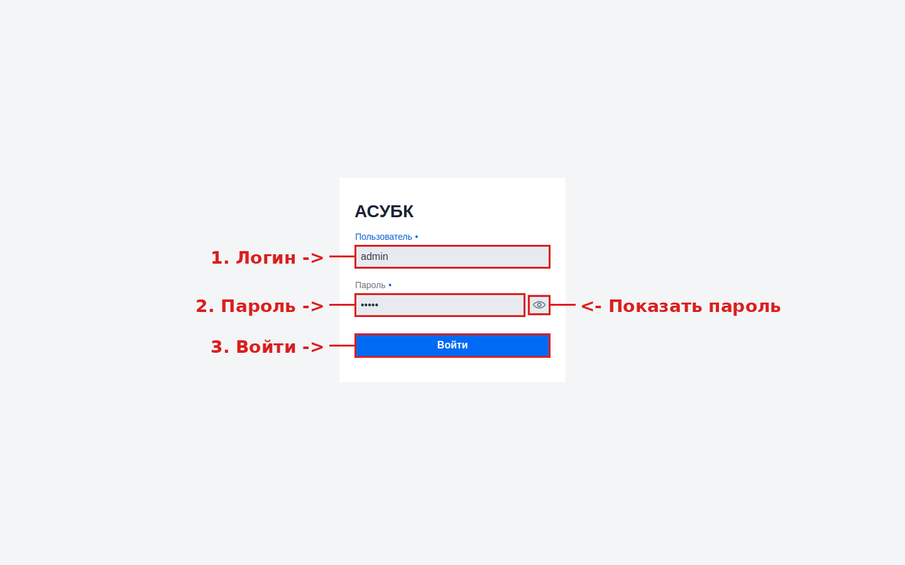
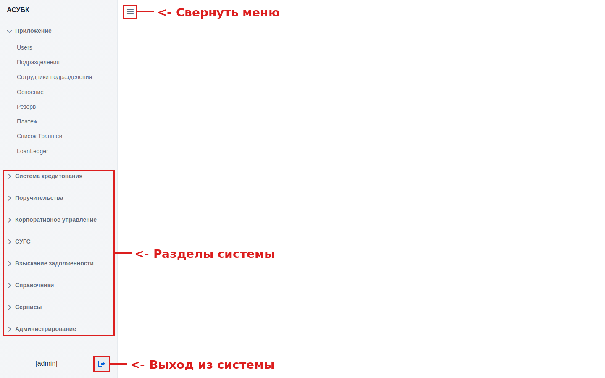

Раздел описывает, как войти в Автоматизированную систему управления бюджетным кредитованием (далее — АСУБК). Авторизация — первый шаг работы с системой: без неё доступ к данным и функциям закрыт. Инструкция рассчитана на пользователя, который открывает систему впервые.
До начала работы убедитесь, что у вас есть всё необходимое:
| Что нужно | Описание |
|---|---|
| Адрес системы (ссылка) | Веб-адрес, по которому открывается АСУБК — см. раздел 3. |
| Логин | Имя пользователя, выданное администратором. |
| Пароль | Личный пароль. Храните его в тайне и никому не передавайте. |
| Браузер | Современный браузер (Google Chrome, Microsoft Edge, Mozilla Firefox) последней версии. |
| Доступ в сеть | Подключение к сети, из которой разрешён доступ к тестовой среде. |
admin / admin.
Откройте браузер и введите в адресную строку адрес тестовой среды:
https://fkftest.okmot.kg/
После открытия адреса система автоматически перенаправит вас на страницу входа
(адрес /login). Если вы уже входили ранее и сессия активна, откроется
сразу главный экран — в этом случае шаги ниже можно пропустить.
На странице входа отображается форма с двумя полями и кнопкой. Заполните её по шагам.

В поле «Пользователь» введите выданное вам имя пользователя (логин). Поле обязательно для заполнения — на это указывает точка • рядом с названием поля.
В поле «Пароль» введите ваш пароль. По умолчанию символы скрыты точками. Чтобы проверить правильность ввода, нажмите значок «глаз» (Показать пароль) в правой части поля — пароль отобразится открытым текстом.
Нажмите синюю кнопку «Войти» или клавишу Enter. Система проверит данные и, при их правильности, откроет главный экран.
После успешного входа открывается главный экран системы. Слева расположено меню навигации, разбитое на разделы (модули). Через него выполняется переход ко всем функциям системы.

Основные элементы главного экрана:
[admin]).
По нему видно, под какой учётной записью выполнен вход.По окончании работы корректно выходите из системы, особенно на общем компьютере. Это защищает данные от доступа посторонних.
| Симптом | Вероятная причина | Что сделать |
|---|---|---|
| Сообщение об ошибке входа, система не пускает | Неверный логин или пароль | Проверьте раскладку клавиатуры и регистр (Caps Lock). Используйте «глаз», чтобы увидеть пароль. При повторе — обратитесь к администратору. |
| Забыт пароль | Пароль утерян | Самостоятельный сброс не предусмотрен — обратитесь к администратору для смены пароля. |
| Страница не открывается / белый экран | Нет доступа к сети или сбой соединения | Проверьте подключение к сети, обновите страницу (F5), проверьте правильность адреса. |
| После входа не видно нужных разделов | Недостаточно прав доступа | Обратитесь к администратору для назначения соответствующей роли. |
| Поля формы отображаются некорректно | Устаревший браузер | Обновите браузер до последней версии или используйте Google Chrome / Microsoft Edge. |